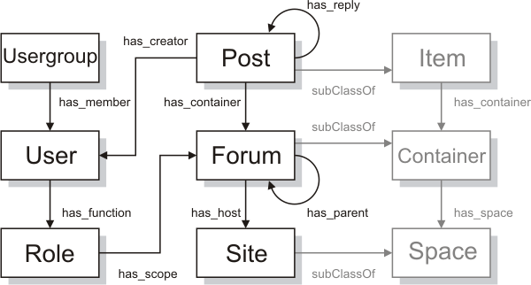

Abstract
The SIOC (Semantically-Interlinked Online Communities) Core Ontology provides the main concepts and properties required to describe information from online communities (e.g., message boards, wikis, weblogs, etc.) on the Semantic Web. This document contains a detailed description of the SIOC Core Ontology.
Status of this document
NOTE: This section describes the status of this document at the time of its publication. Other documents may supersede this document. A list of current W3C publications can be found in the W3C technical reports index at http://www.w3.org/TR/.
This specification is an evolving document. This document is generated by combining a machine-readable SIOC Core Ontology Namespace expressed in RDF/XML with a specification template and a set of per-term documents.
Authors welcome suggestions on the SIOC Core Ontology Namespace and this document. Please send comments to the SIOC developers' mailing list (SIOC-Dev), public archives are available. This document may be updated or added to based on implementation experience, but no commitment is made by the authors regarding future updates.
Please consult the namespaces.zip archive, a part of this submission, for a snapshot of the SIOC Ontology namespaces referenced in this document. Live namespace documents are located at relevant namespace URIs.
By publishing this document, W3C acknowledges that the Submitting Members have made a formal Submission request to W3C for discussion. Publication of this document by W3C indicates no endorsement of its content by W3C, nor that W3C has, is, or will be allocating any resources to the issues addressed by it. This document is not the product of a chartered W3C group, but is published as potential input to the W3C Process. A W3C Team Comment has been published in conjunction with this Member Submission. Publication of acknowledged Member Submissions at the W3C site is one of the benefits of W3C Membership. Please consult the requirements associated with Member Submissions of section 3.3 of the W3C Patent Policy. Please consult the complete list of acknowledged W3C Member Submissions.
Table of contents
1. Introduction
Online community sites (weblogs, message boards, wikis, etc.) have replaced the traditional means of keeping a community informed via libraries and publishing. They are a valuable source of information and quite often it is a community site where you will end up when searching for some information. But there is a problem: online community sites are like islands without bridges connecting them. You may find some information in a forum, but not know that there are missing pieces of related information that can be found on other community sites.
Semantically-Interlinked Online Communities, or SIOC, is an attempt to link online community sites, to use Semantic Web technologies to describe the information that communities have about their structure and contents, and to find related information and new connections between content items and other community objects. SIOC is based around the use of machine-readable information provided by these sites.
The SIOC Core Ontology described in this document is the foundation for Semantically-Interlinked Online Communities. Developers can use this ontology to express information contained within community sites in a simple and extensible way.
More information about the tools and projects using SIOC can be found on the SIOC Project page (http://sioc-project.org/).
1.1. Terminology and notation
The keywords "MUST", "MUST NOT", "REQUIRED", "SHALL", "SHALL NOT", "SHOULD", "SHOULD NOT", "RECOMMENDED", "MAY", and "OPTIONAL" in this document are to be interpreted as described in RFC 2119.
Namespace URIs of the general form "http://www.example.com/" represent some application-dependent or context-dependent URI as defined in RFC 2396.
The XML Namespace URIs that MUST be used by implementations of this specification are:
2. SIOC at a glance
An alphabetical index of SIOC terms, by class (concepts) and by property (relationships, attributes), are given below. All the terms are hyperlinked to their detailed description for quick reference.
3. SIOC overview
The SIOC Core Ontology definitions presented here are written using a computer language (RDF/OWL) that makes it easy for software to process some basic facts about the terms in the SIOC Core Ontology, and consequently about the things described in SIOC documents. A SIOC document, unlike a traditional Web page, can be combined with other SIOC and RDF documents to create a unified database of information.

3.1. Example
Here is a very basic document describing a blog entry:
<sioc:Post rdf:about="http://johnbreslin.com/blog/2006/09/07/creating-connections-between-discussion-clouds-with-sioc/">
<dc:title>Creating connections between discussion clouds with SIOC</dc:title>
<dcterms:created>2006-09-07T09:33:30Z</dcterms:created>
<sioc:has_container rdf:resource="http://johnbreslin.com/blog/index.php?sioc_type=site#weblog"/>
<sioc:has_creator>
<sioc:User rdf:about="http://johnbreslin.com/blog/author/cloud/" rdfs:label="Cloud">
<rdfs:seeAlso rdf:resource="http://johnbreslin.com/blog/index.php?sioc_type=user&sioc_id=1"/>
</sioc:User>
</sioc:has_creator>
<sioc:content>SIOC provides a unified vocabulary for content and interaction description: a semantic layer that can co-exist with existing discussion platforms.</sioc:content>
<sioc:topic rdfs:label="Semantic Web" rdf:resource="http://johnbreslin.com/blog/category/semantic-web/"/>
<sioc:topic rdfs:label="Blogs" rdf:resource="http://johnbreslin.com/blog/category/blogs/"/>
<sioc:has_reply>
<sioc:Post rdf:about="http://johnbreslin.com/blog/2006/09/07/creating-connections-between-discussion-clouds-with-sioc/#comment-123928">
<rdfs:seeAlso rdf:resource="http://johnbreslin.com/blog/index.php?sioc_type=comment&sioc_id=123928"/>
</sioc:Post>
</sioc:has_reply>
</sioc:Post>
This brief example introduces the basics of SIOC. It says:
- There is a
sioc:Post object identified as http://johnbreslin.com/blog/2006/09/07/creating-connections-between-discussion-clouds-with-sioc/ which has the following properties:
dc:title property with value "Creating connections between discussion clouds with SIOC"dcterms:created property with ISO-8601 formatted date value 2006-09-07T09:33:30Zsioc:has_container relationship with an object identified as http://johnbreslin.com/blog/index.php?sioc_type=site#weblogindicates a sioc:Forum object (a weblog in this case) that this post belongs tosioc:has_creator relationship with a sioc:User object labelled "Cloud" and identified as http://johnbreslin.com/blog/author/cloud/ with an rdfs:seeAlso property pointing to more SIOC information about this object located at http://johnbreslin.com/blog/index.php?sioc_type=user&sioc_id=1sioc:content property with a text-only representation of the contentsioc:topic properties indicating topics: "Semantic Web" identified as http://johnbreslin.com/blog/category/semantic-web/ and "Blogs" identified as http://johnbreslin.com/blog/category/blogs/sioc:has_reply relationship (pointing to replies and comments of a post) with a sioc:Post object identified as http://johnbreslin.com/blog/2006/09/07/creating-connections-between-discussion-clouds-with-sioc/#comment-123928 with an rdfs:seeAlso property pointing to more SIOC information about this reply located at http://johnbreslin.com/blog/index.php?sioc_type=comment&sioc_id=123928
In other words:
- There is a post titled "Creating connections between discussion clouds with SIOC" created at 09:33:30 on 2006-09-07 written by a user "Cloud" on topics "Blogs" and "Semantic Web" with contents described in
sioc:content.
- More information about its author can be found at
http://johnbreslin.com/blog/index.php?sioc_type=user&sioc_id=1
- The post has a reply and detailed SIOC information about this reply can be found at
http://johnbreslin.com/blog/index.php?sioc_type=comment&sioc_id=123928
This simple example uses only two classes of SIOC objects: sioc:Post and sioc:User. There are other classes in SIOC used to describe more information about users, sites, communities and other objects.
SIOC documents may use other existing ontologies to enrich the information described. Additional information about the creator of the post can be described using the FOAF Vocabulary. Rich content of the post (e.g., HTML representation) can be described using AtomOwl or the RSS 1.0
Content Module. For more information on classes and properties from other vocabularies that are often used together with SIOC, see the section on external classes and properties.
You can see a full SIOC profile of the example blog post which uses FOAF for personal information and the RSS 1.0 Content Module for rich content: (a) in RDF/XML; (b) rendered in a SIOC Browser. This profile is generated by the WordPress SIOC export plugin.
3.2. Background
SIOC is managed as a collaborative effort amongst members of the Semantic Web Cluster at DERI, NUI Galway (funded by SFI) and Semantic Web developers on the SIOC developers' mailing list (SIOC-Dev). The name "SIOC" is an acronym for "Semantically-Interlinked Online Communities", and is coincidentally the Irish word for "frost".
More resources on SIOC are available on the SIOC Project page.
The SIOC-Dev mailing list is the main discussion list for questions about SIOC. There are also two active and friendly IRC channels on freenode: #sioc (for SIOC) and #swig (for the Semantic Web Interest Group). There is also a wiki for SIOC at wiki.sioc-project.org.
The remainder of this specification describes how to publish and interpret descriptions such as these on the Web, using RDF for syntax (file format) and terms from SIOC. It introduces a number of classes (concepts such as "Post") and properties (relationship and attribute types such as "has_creator" or "content").
The specific contents of the SIOC Core Ontology are detailed in the SIOC Core Ontology Namespace document.
Related publications:
- J.G. Breslin, A. Harth, U. Bojars, S. Decker, "Towards Semantically-Interlinked Online Communities", Proceedings of the 2nd European Semantic Web Conference (ESWC '05), LNCS vol. 3532, pp. 500-514, Heraklion, Greece, 2005.
- U. Bojars, J.G. Breslin, A. Passant, "SIOC Browser - Towards a Richer Blog Browsing Experience", The 4th Blogtalk Conference (Blogtalk Reloaded), Vienna, Austria, October 2006.
- For more SIOC-related publications, see the publications page.
4. The SIOC ontology description
This document presents SIOC as a Semantic Web vocabulary or ontology. It describes the SIOC Core Ontology and the terms (RDF classes and properties) that constitute it, so that Semantic Web applications can use those terms in a variety of RDF-compatible document formats and applications. The SIOC Core Ontology is straightforward, pragmatic and designed to allow simultaneous deployment and extension, and is therefore intended for wide scale use.
4.1. Evolution and extension of SIOC
The SIOC ontology is identified by the namespace URI "http://rdfs.org/sioc/ns#".
Revisions and extensions of SIOC are conducted through edits to the namespace document, which by convention is published on the Web at the namespace URI.
The properties and types defined here provide some basic concepts for use in SIOC descriptions. Other vocabularies (e.g. the Dublin Core metadata elements for simple bibliographic description, FOAF, RSS 1.0, etc.) can also be mixed in with SIOC terms, as can local extensions. SIOC is designed to be extended, and some modules have been added (see below).
4.2. SIOC modules
SIOC modules are used to extend the available terms and to avoid making the SIOC Core Ontology too complex and unreadable. At present SIOC has two modules: Types and Services.
SIOC Types Module
During the development of the SIOC ontology, the addition of multiple sub-classes for different types of Forums and Posts was starting to become unwieldy. Therefore, it was decided to move these sub-classes and sub-properties into a "Types" module of SIOC. Some of the SIOC Core Ontology classes and corresponding SIOC Types Module sub-classes include:
- Container: AddressBook, AnnotationSet, AudioChannel, BookmarkFolder, Briefcase, EventCalendar, ImageGallery, ProjectDirectory, ResumeBank, ReviewArea, SubscriptionList, SurveyCollection, VideoChannel, Wiki.
- Item: Poll.
- Forum: ArgumentativeDiscussion, ChatChannel, MailingList, MessageBoard, Weblog.
- Post: BlogPost, BoardPost, Comment, InstantMessage, MailMessage, WikiArticle.
Full descriptions for the identified types are given in the SIOC Types Module at http://rdfs.org/sioc/types. Rather than restrict users to our pre-defined types, we also encourage flexibility whereby people can define their own sub-types of SIOC classes.
SIOC Services Module
Community sites typically publish web service interfaces for programmatic search and content management services (typically SOAP and/or RESTian). These services may be generic in nature (with standardised signatures covering input and output message formats) or service specific (where signatures are unique to specific offerings, à la current Web 2.0 API usage patterns).
A sioc:Service allows us to indicate that a web service is associated with (located on) a sioc:Site or a part of it. This class and its properties are defined in the SIOC Services Module at http://rdfs.org/sioc/services.
This module provides a simple way to tell others about a web service, and should not be confused with web service definitions that define the details of a web service. A sioc:service_definition property can be used to relate a sioc:Service to its full web service definition (e.g., in WSDL).
4.3. SIOC and standards
SIOC depends heavily on W3C's standards work, specifically on XML, XML Namespaces, RDF, and OWL. All SIOC documents must be valid RDF documents.
This specification contributes an ontology, "SIOC", to the Semantic Web, specifying it using W3C's Resource Description Framework (RDF). As such, SIOC adopts by reference a syntax (using XML), a data model (RDF graphs), and a mathematically-grounded definition for the rules that underpin the RDF design.
4.4. SIOC and RDF
SIOC is an application of the Resource Description Framework (RDF) because the subject area we are describing - online communities - has so many competing requirements that a standalone format would not capture them or would lead to describing these requirements in a number of incompatible formats. By using RDF, SIOC gains a powerful extensibility mechanism, allowing SIOC-based descriptions to be mixed with claims made in any other RDF vocabulary.
SIOC as an ontology cannot incorporate everything we might want to talk about that is related to communities, about users in these communities, and about the content that users have created, or it would be as large as a full-sized dictionary. Instead of covering all topics within SIOC itself, we describe the basic topics and build into a larger framework - RDF - that allows us to take advantage of work elsewhere on more specific description vocabularies.
RDF provides SIOC with a way to mix together different descriptive vocabularies in a consistent way. Vocabularies can be created by different communities and groups as appropriate and mixed together as required, without needing any centralised agreement on how terms from different vocabularies can be written down in XML.
RDF represents knowledge as a simple set of assertions or triples. The basic model of RDF is a graph formed by combining multiple triples together. For more information on RDF and how to work with it see "What is RDF?" and "Where do I find tools for Semantic Web development?" in the Semantic Web FAQ.
5. Cross-reference for SIOC classes and properties
SIOC introduces the following classes and properties. See the SIOC
Core Ontology Namespace in RDFS/OWL for more details.
Class: sioc:Container
Container - An area in which content Items are contained.
Container is a high-level concept used to group content Items together. The relationships between a Container and the Items that belong to it are described using sioc:container_of and sioc:has_container properties. A hierarchy of Containers can be defined in terms of parents and children using sioc:has_parent and sioc:parent_of.
Subclasses of Container can be used to further specify typed groupings of Items in online communities. Forum, a subclass of Container and one of the core classes in SIOC, is used to describe an area on a community Site (e.g., a forum or weblog) on which Posts are made. The SIOC Types Ontology Module contains additional, more specific subclasses of sioc:Container.
[back to top]
Class: sioc:Forum
Forum - A discussion area on which Posts or entries are made.
Forums can be thought of as channels or discussion area on which Posts are made. A Forum can be linked to the Site that hosts it. Forums will usually discuss a certain topic or set of related topics, or they may contain discussions entirely devoted to a certain community group or organisation. A Forum will have a moderator who can veto or edit posts before or after they appear in the Forum.
Forums may have a set of subscribed Users who are notified when new Posts are made. The hierarchy of Forums can be defined in terms of parents and children, allowing the creation of structures conforming to topic categories as defined by the Site administrator. Examples of Forums include mailing lists, message boards, Usenet newsgroups and weblogs.
The SIOC Types Ontology Module defines come more specific subclasses of sioc:Forum.
[back to top]
Class: sioc:Item
Item - A content Item that can be posted to or created within a Container.
Item is a high-level concept for content items. It has subclasses that further specify different types of Items. One of these subclasses (which plays an important role in SIOC) is sioc:Post, used to describe articles or messages created within online community Sites. The SIOC Types Ontology Module describes additional, more specific subclasses of sioc:Item.
Items can be contained within Containers.
[back to top]
Class: sioc:Post
Post - An article or message that can be posted to a Forum.
A Post is an article or message posted by a User to a Forum. A series of Posts may be threaded if they share a common subject and are connected by reply or by date relationships. Posts will have content and may also have attached files, which can be edited or deleted by the Moderator of the Forum that contains the Post.
The SIOC Types Ontology Module describes some additional, more specific subclasses of sioc:Post.
[back to top]
Class: sioc:Role
Role - A Role is a function of a User within a scope of a particular Forum, Site, etc.
Roles are used to express functions or access control privileges that Users may have.
[back to top]
Class: sioc:Site
Site - A Site can be the location of an online community or set of communities, with Users and Usergroups creating Items in a set of Containers. It can be thought of as a web-accessible data Space.
A Site is the location of an online community or set of communities, with Users in Usergroups creating content therein. While an individual Forum or group of Forums are usually hosted on a centralised Site, in the future the concept of a "site" may be extended (for example, a topic Thread could be formed by Posts in a distributed Forum on a peer-to-peer environment Space).
[back to top]
Class: sioc:Space
Space - A Space is a place where data resides, e.g., on a website, desktop, fileshare, etc.
A Space is defined as being a place where data resides. It can be the location for a set of Containers of content Items, e.g., on a Site, personal desktop, shared filespace, etc. Any data object that resides on a particular Space can be linked to it using the sioc:has_space property.
[back to top]
Class: sioc:Thread
Thread - A container for a series of threaded discussion Posts or Items.
Mailing lists, forums and blogs on community sites usually employ some threaded discussion methods, whereby discussions are initialised by a certain user and replied to by others. The Thread container is used to group Posts from a single discussion thread together via the sioc:container_of property, especially where a sioc:has_reply / reply_of structure is absent.
[back to top]
Class: sioc:User
User - A User account in an online community site.
A User is an online account of a member of an online community. It is connected to Items and Posts that a User creates or edits, to Containers and Forums that it is subscribed to or moderates and to Sites that it administers. Users can be grouped for purposes of allowing access to certain Forums or enhanced community site features (weblogs, webmail, etc.).
A foaf:Person will normally hold a registered User account on a Site (through the property foaf:holdsAccount), and will use this account to create content and interact with the community.
sioc:User describes properties of an online account, and is used in combination with a foaf:Person (using the property sioc:account_of) which describes information about the individual itself.
[back to top]
Class: sioc:Usergroup
Usergroup - A set of User accounts whose owners have a common purpose or interest. Can be used for access control purposes.
A Usergroup is a set of members or Users of a community who have a common Role, purpose or interest. While a group of Users may be a single community that is linked to a certain Forum, they may also be a set of Users who perform a certain Role, for example, moderators or administrators.
[back to top]
Property: sioc:about
about - Specifies that this Item is about a particular resource, e.g., a Post describing a book, hotel, etc.
[back to top]
Property: sioc:account_of
account_of - Refers to the foaf:Agent or foaf:Person who owns this sioc:User online account.
Links a sioc:User account to a foaf:Person whom it belongs to. The reverse direction - i.e. linking a foaf:Person to a User account that it owns or holds - can be described using the foaf:holdsAccount property.
[back to top]
Property: sioc:administrator_of
administrator_of - A Site that the User is an administrator of.
[back to top]
Property: sioc:attachment
attachment - The URI of a file attached to a Post.
[back to top]
Property: sioc:avatar
avatar - An image or depiction used to represent this User.
[back to top]
Property: sioc:container_of
container_of - An Item that this Container contains.
Containers and Forums may contain Items or Posts, and this property is used to link to these.
[back to top]
Property: sioc:content
content - The content of the Post in plain text format.
This property is for a plain-text rendering of the content of a Post. Rich content (e.g., HTML, wiki markup, BBCode, etc.) can be described using the Content class from AtomOwl or the content:encoded property from the RSS 1.0 Content Module.
[back to top]
Property: sioc:creator_of
creator_of - An Item that the User is a creator of.
Links to a User account that an Item was created by. Being a creator of an Item is not a Role.
[back to top]
Property: sioc:email
email - An electronic mail address of the User.
[back to top]
Property: sioc:email_sha1
email_sha1 - An electronic mail address of the User, encoded using SHA1.
[back to top]
Property: sioc:feed
feed - A feed (e.g., RSS, Atom, etc.) pertaining to this resource (e.g., for a Forum, Site, User, etc.).
[back to top]
Property: sioc:function_of
function_of - A User who has this Role.
[back to top]
Property: sioc:has_administrator
has_administrator - A User who is an administrator of this Site.
[back to top]
Property: sioc:has_container
has_container - The Container to which this Item belongs.
[back to top]
Property: sioc:has_creator
has_creator - This is the User who made this Item.
The has_creator property links an Item to its author's User account. Thus, we can follow the link from the Item to the creator and locate the other Items created by the same User. Being the creator of an Item is not a Role.
The community can be seen as a network of Items with Users linked to each Item, and there is also a network of other Items created by a given User stemming from there. We can use this information in community sites to locate more contributions by the given author.
[back to top]
Property: sioc:has_function
has_function - A Role that this User has.
Links a User to a Role that this User has (it is a function of this User). Users can have many different Roles in different Forums.
[back to top]
Property: sioc:has_host
has_host - The Site that hosts this Forum.
[back to top]
Property: sioc:has_member
has_member - A User who is a member of this Usergroup.
[back to top]
Property: sioc:has_moderator
has_moderator - A User who is a moderator of this Forum.
[back to top]
Property: sioc:has_modifier
has_modifier - A User who modified this Item.
This property links an Item or Post to the User who modified it (e.g., contributed new content to it after its creation). Being a modifier of a Post is not a Role.
[back to top]
Property: sioc:has_owner
has_owner - A User that this Container is owned by.
[back to top]
Property: sioc:has_parent
has_parent - A Container or Forum that this Container or Forum is a child of.
[back to top]
Property: sioc:has_reply
has_reply - Points to an Item or Post that is a reply or response to this Item or Post.
The has_reply property links an Item to other follow-up content Items made on the same topic. Use of this property can result in a single branch of replies from the original Item, or in a tree-like structure with branches forking at different Items along the way.
For example, in Forums such as mailing lists, message boards, etc., has_reply will be used to link a starter Post to any Post that is made in response to the original message. Also, has_reply can be used to connect any type of content Item (images, videos, etc.) to any Item or text Post that is made in response.
[back to top]
Property: sioc:has_scope
has_scope - A Forum that this Role applies to.
[back to top]
Property: sioc:has_space
has_space - A data Space which this resource is a part of.
[back to top]
Property: sioc:has_subscriber
has_subscriber - A User who is subscribed to this Container.
[back to top]
Property: sioc:has_usergroup
has_usergroup - Points to a Usergroup that has certain access to this Space.
[back to top]
Property: sioc:host_of
host_of - A Forum that is hosted on this Site.
[back to top]
Property: sioc:id
id - An identifier of a SIOC concept instance. For example, a user ID. Must be unique for instances of each type of SIOC concept within the same site.
[back to top]
Property: sioc:ip_address
ip_address - The IP address used when creating this Item. This can be associated with a creator. Some wiki articles list the IP addresses for the creator or modifiers when the usernames are absent.
[back to top]
Property: sioc:link
link - A URI of a document which contains this SIOC object.
Links to a URI of a document where this SIOC object is located. Usually sioc:link is not needed because it can be assigned directly as a URI of this SIOC object. It is recommended that its usage is limited only to those cases where a document's URI may not be assigned to the object itself.
For example, this may occur in a page that contains a number of objects (e.g., comments to a blog post) that can not be addressed individually.
[back to top]
Property: sioc:links_to
links_to - Links extracted from hyperlinks within a SIOC concept, e.g., Post or Site.
[back to top]
Property: sioc:member_of
member_of - A Usergroup that this User is a member of.
[back to top]
Property: sioc:moderator_of
moderator_of - A Forum that User is a moderator of.
[back to top]
Property: sioc:modifier_of
modifier_of - An Item that this User has modified.
[back to top]
Property: sioc:name
name - The name of a SIOC instance, e.g. a username for a User, group name for a Usergroup, etc.
The name property is used to assign a name to various SIOC objects. For example, it may be username of a User online account, the name of a Usergroup, the name given to a role (e.g. Moderator, Registered User), etc.
[back to top]
Property: sioc:next_by_date
next_by_date - Next Item or Post in a given Container sorted by date.
[back to top]
Property: sioc:next_version
next_version - Links to the next revision of this Item or Post.
[back to top]
Property: sioc:note
note - A note associated with this Post, for example, if it has been edited by a User.
[back to top]
Property: sioc:num_replies
num_replies - The number of replies that this Post has. Useful for when the reply structure is absent.
[back to top]
Property: sioc:num_views
num_views - The number of times this Item, Thread, User profile, etc. has been viewed.
The num_views property represents the number of times a particular Item, Post, Thread, User profile, etc. has been viewed. This is an example of where content is automatically created by an end-user, and can increase the content's importance in terms of searching. For example, someone creates a query across a set of SIOC-enabled sites, and is returned a list of subjects and extracts from certain Posts, sorted by the popularity of the Post, as indicated by the num_views property.
[back to top]
Property: sioc:owner_of
owner_of - A Container owned by a particular User, for example, a weblog or image gallery.
[back to top]
Property: sioc:parent_of
parent_of - A child Container or Forum that this Container or Forum is a parent of.
[back to top]
Property: sioc:previous_by_date
previous_by_date - Previous Item or Post in a given Container sorted by date.
[back to top]
Property: sioc:previous_version
previous_version - Links to a previous revision of this Item or Post.
[back to top]
Property: sioc:reply_of
reply_of - Links to an Item or Post which this Item or Post is a reply to.
[back to top]
Property: sioc:scope_of
scope_of - A Role that has a scope of this Forum.
[back to top]
Property: sioc:sibling
sibling - A Post may have a sibling or a twin that exists in a different Forum, but the siblings may differ in some small way (for example, language, category, etc.). The sibling of this Post should be self-describing (that is, it should contain all available information).
A recent development in online discussion methods is an article or Post that appears in multiple blogs, or has been copied from one Forum to another relevant Forum. In SIOC, we can treat these copies of Posts as siblings of each other if we think of the Posts as non-identical twins that share most characteristics but differ in some manner.
For example, a post is created on one blog and categorized with the topic "TV", but has been copied to another blog with multiple topics such as "Sci-Fi" or "Arts".
In the creation of siblings, the new sibling instance will be fully self-describing but will have a number of changed properties (in the example, has_container and topic would change). A sibling might also be a version of a post in another language.
[back to top]
Property: sioc:space_of
space_of - A resource which belongs to this data Space.
[back to top]
Property: sioc:subscriber_of
subscriber_of - A Container that a User is subscribed to.
[back to top]
Property: sioc:topic
topic - A topic of interest, linking to the appropriate URI, e.g., in the Open Directory Project or of a SKOS category.
| OWL Type: |
ObjectProperty |
|---|
| sub-property-of: |
dc:subject |
|---|
A topic definition applies to most of the concepts defined in this ontology, and topic metadata can be a useful way to match documents and people to each other.
While it may be more difficult to require a User to assign a topic to an Item or Post at creation time, it is more likely that a Container will have an associated topic or set of topics that can be propagated to the Items it contains. Similarly, Users or Usergroups can define topics of interest when their profiles are created or modified.
In order to enable the location of related information between the community sites, a common categorisation system has to be used. On large-scale general-interest community sites, topics may be quite broad and a general categorisation system such as the DMOZ category hierarchy may be used.
:post_123 a sioc:Post ;
sioc:topic <http://dmoz.org/Business/Publishing_and_Printing/> .
<http://dmoz.org/Business/Publishing_and_Printing/> rdfs:label "Publishing and Printing" .
On specialised sites, which may have a very specific category hierarchy, generic categorisation systems are not suitable because they are too broad and may not have the necessary level of detail. For these sites, the category hierarchy may be defined in the SKOS framework and mappings between these concepts and a common category system may be created.
A proper use of topics can lead to many interesting scenarios in community sites. For example, a User has defined certain topics of interest on registering an account, after which Forums matching those topics are suggested to the User. The User subscribes to some of these Forums, and makes Posts on these and other Forums. The Forums now associated with this User will have certain topics that can be used for purposes of social networking or automatic community creation.
This property is often used to express the information about categories or tags assigned to a Post or Item. The SIOC Types Ontology Module allows one to further specify what type of topic it is using the classes sioc_t:Category and sioc_t:Tag.
[back to top]
Property: sioc:usergroup_of
usergroup_of - A Space that the Usergroup has access to.
[back to top]
6. External classes and properties
Classes and properties from other ontologies can be used together with SIOC. During the SIOC ontology design process, some external classes and properties were identified that are suitable for reuse. Such concepts are not included inside SIOC but are used directly together with terms from SIOC to describe the information in online community sites.
This section lists the most important external classes and properties that can be used with SIOC in a meaningful way. This list is not and cannot be exhaustive because many RDF ontologies can be used together.
Class: foaf:Person
Used in SIOC to represent the information about a person who holds an account (sioc:User) on a Site. Account specific information is described by sioc:User, a subclass of foaf:OnlineAccount.
foaf:Person can also be used to describe information about persons that do not have a User account on a Site, e.g., for authors of comments left by visitors.
Class: skos:Concept
May be used to represent topics or tags defined on a community site. The sioc:topic property can be used to link an Item or Post to a skos:Concept.
Property: dc:subject
Can be used for keywords describing the subject of an Item or Post. See also: sioc:topic.
Property: dc:title
Specifies the title of a resource. Usually used to describe the title of an Item or Post.
Property: dcterms:created
Details the date and time when a resource was created. Usually used as a property of an Item or Post.
Property: dcterms:hasPart
A resource that is a part of this subject. Usually used from the domain of a Post or Community.
Property: dcterms:isPartOf
A resource that the subject is a part of. Usually used with the range of a Post or Community.
Property: dcterms:modified
Details the date and time when a resource was modified. Usually used as a property of an Item or Post.
Property: foaf:holdsAccount
Used to link a foaf:Person to a sioc:User. See also: sioc:account_of.
Property: content:encoded
Used to describe the encoded content of a Post, contained in CDATA areas.
These are the ontology namespaces referenced:
7. Acknowledgements
We would like to acknowledge the contributions of Danny Ayers, Juan Botía, Richard Cyganiak, Benjamin Heitmann, Ann Johnston, Charles McCathieNevile, Libby Miller, Andrés Muñoz, Donncha O Caoimh, Jack Park, and Antonio Skarmeta towards this specification. We would also like to acknowledge the many helpful suggestions from members of the SIOC developers' mailing list, and we thank Dave Beckett for the Redland RDF library which was used in the creation of this specification.
8. References
- [RFC 2119] S. Bradner,
"Key words for use in RFCs to Indicate Requirement Levels", RFC 2119, Harvard University, March 1997, http://www.ietf.org/rfc/rfc2119.txt.
- [RFC 2396] T. Berners-Lee et al., "Uniform Resource Identifiers
(URI): Generic Syntax", RFC 2396, Internet Engineering Task Force, August 1998, http://www.ietf.org/rfc/rfc2396.txt.
9. Change log
- 2005-04-07: Initial version of the SIOC Ontology specification.
- 2005-06-10: Updated template and term descriptions. Removed RDF/XML from specification for XHTML validation.
- 2005-06-24: Created SIOC-Dev mailing list. Added missing links to the template.
- 2005-10-27: Editorial updates.
- 2005-12-19: Fixed multiple domains problem.
- 2006-06-07: Major revision. See a summary of changes sent to the mailing list.
- 2006-08-27: Revised descriptions of SIOC classes and properties. Updated content and layout of the specification.
- 2006-09-14: Removed deprecated properties.
- 2006-09-14: SIOC page moved to http://sioc-project.org/. Updated links in the specification.
- 2006-09-27: Updated SIOC example. Added modules section.
- 2006-10-13: Changed range of sioc:account_of.
- 2006-12-12: Added sioc:Webservice and its properties, sioc:moderator_of / has_moderator, num_replies, and num_views. Removed sioc:views.
- 2007-03-12: Added sioc:Container, sioc:Item, sioc:Space, standardised rdfs:comment placements in schema, added missing domains and ranges, added sioc:has_owner / owner_of, sioc:has_space / space_of, sioc:has_container / container_of, sioc:feed, sioc:content_enhanced, sioc:embeds (the last two properties are pending approval from the SIOC developer community).
- 2007-03-20: sioc:Community subclassed from sioc:Space. Changed descriptions, range and domain of sioc:has_part / part_of and sioc:has_space / space_of.
- 2007-05-11: Added sioc:Thread, sioc:next_by_date / previous_by_date. Revised section "SIOC and RDF". Added a new figure with the main SIOC classes and properties.
- 2007-05-31: Removed mappings file; merged with main namespace. Moved service-related terms to SIOC Services module. Changed some domains and ranges from Post to Item and from Forum to Container. Update some descriptions of terms, e.g. sibling. Added sioc:has_administrator / sioc:administrator_of as follow-up to discussion with danbri last month. Changed sioc:has_group / group_of to has_usergroup / usergroup_of.
- 2007-06-12: Version for member submission.
uldis.bojars@deri.org
john.breslin@deri.org